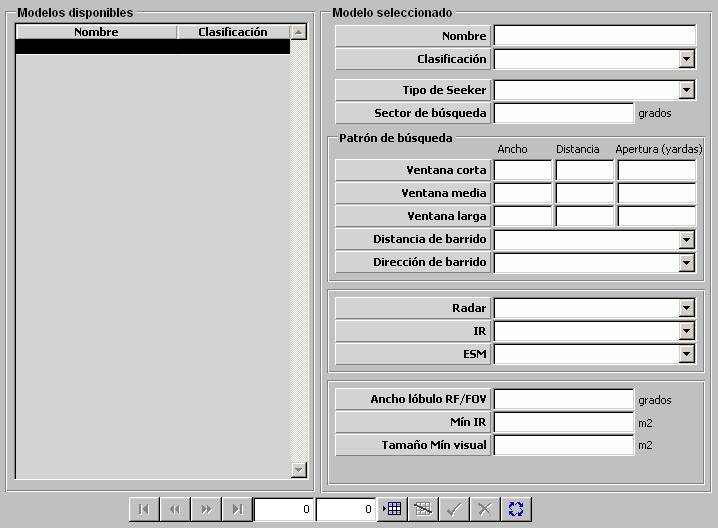

Seeker

Descripción de los parámetros:
Tipo de Seeker: Puede tomar los siguientes valores:
- RADAR
- IR
- EO
- ARM
- SEMIACTIVO
- CLOS
- LASER
- FILOGUIADO
Este parámetro determina el comportamiento del seeker y por tanto también el comportamiento del misil en vuelo que monte este seeker. En general, el comportamiento del misil en vuelo en cada una de sus fases es distinto dependiendo del tipo de navegación del misil y del tipo de seeker que incorpore. En cuanto al comportamiento del modelo de seeker, este parámetro determina qué sensor tiene asociado. Además, el tipo de navegación del misil condiciona el tipo de seeker que monta:
| Tipo de Seeker | Sensor Asociado | Tipo de Navegación |
| RADAR | Radar | LOCK-ON PREVIO, DESIGNACIÓN RADAR, PREPROGRAMADA, CLOS |
| IR | IR | LOCK-ON PREVIO, DESIGNACIÓN RADAR, PREPROGRAMADA, CLOS, EO |
| EO | Visual | LOCK-ON PREVIO, DESIGNACIÓN RADAR, PREPROGRAMADA, CLOS, EO |
| ARM | ESM | LOCK-ON PREVIO, DESIGNACIÓN RADAR, PREPROGRAMADA, ARM |
| SEMIACTIVO | Ninguno | LOCK-ON PREVIO, DESIGNACIÓN RADAR, SEMIACTIVA, CLOS |
| CLOS | Ninguno | LOCK-ON PREVIO, DESIGNACIÓN RADAR, CLOS |
| LASER | Visual | LOCK-ON PREVIO, DESIGNACIÓN RADAR, LASER |
| FILOGUIADO | Ninguno | LOCK-ON PREVIO, DESIGNACIÓN RADAR, FILOGUIADA |
Sector de Búsqueda: Este parámetro determina sector activo del sensor asociado al seeker. Además determina el tamaño de la célula de resolución si el seeker es tipo RADAR. Es tenido en cuenta por el misil para filtrar los contactos detectados por el sensor asociado al seeker y para la simulación del efecto centroide.
Unidades: grados
Rango: 0 – 360
Patrón de Búsqueda: Los siguientes parámetros determinan la ventana de búsqueda y el patrón de búsqueda de blancos para el misil mediante el sensor asociado al seeker. Es tenido en cuenta por el modelo de misil en la fase de búsqueda para seleccionar el blanco. Se distinguen tres ventanas (corta, media y larga), caracterizadas por un ancho y una distancia (largo), que podrán ser seleccionadas por el operador en el lanzamiento del misil. Estos parámetros sólo serán introducidos si se ha seleccionado tipo de seeker RADAR o IR (MEDIO o LEJANO).

Ventana Corta / Media / Larga:
Ancho:
Unidades: yardas
Rango: 0 – 99999
Distancia:
Unidades: yardas
Rango: 0 – 99999
Apertura:
Unidades: yardas
Rango: 0 – 99999
Distancia de Barrido: Puede tomar los siguientes valores:
- MIN a MAX
- MAX a MIN
Este parámetro determina cómo se realiza el barrido en distancia de la ventana del seeker. Es tenido en cuenta por el modelo de misil en la fase de búsqueda para seleccionar el blanco si el seeker puede detectar varios dentro de la ventana. Si el barrido en MIN a MAX seleccionará el más cercano, y si es MAX a MIN, el más lejano. Este parámetro sólo será introducido si se ha seleccionado tipo de seeker RADAR o IR (MEDIO o LEJANO).
Dirección de Barrido: Puede tomar los siguientes valores:
- DERECHA a IZQUIERDA
- IZQUIERDA a DERECHA
Este parámetro determina cómo se realiza el barrido en ángulo de la ventana del seeker. Es tenido en cuenta por el modelo de misil en la fase de búsqueda para seleccionar el blanco si el seeker puede detectar varios dentro de la ventana y a la misma distancia. Si el barrido es a DERECHA a IZQUIERDA se seleccionará el que esté más a la derecha, y si el barrido es a IZQUIERDA a DERECHA, el que esté más a la izquierda. Este parámetro sólo será introducido si se ha seleccionado tipo de seeker RADAR o IR (MEDIO o LEJANO).
Radar: Este parámetro determina el sensor Radar asociado al seeker. Es tenido en cuenta por el misil para la búsqueda de blancos. Ver apartado Radar. Este parámetro sólo será introducido si se ha seleccionado tipo de seeker RADAR.
IR: Este parámetro determina el sensor IR asociado al seeker. Es tenido en cuenta por el misil para la búsqueda de blancos. Ver apartado IR. Este parámetro sólo será introducido si se ha seleccionado tipo de seeker IR MEDIO o IR LEJANO.
ESM: Este parámetro determina el sensor ESM asociado al seeker. Es tenido en cuenta por el misil para la búsqueda de blancos. Ver apartado ESM. Este parámetro sólo será introducido si se ha seleccionado tipo de seeker ARM.
Ancho Lóbulo RF/FOV: Este parámetro determina la célula de resolución del seeker tipo RADAR, IR MEDIO o IR LEJANO. Es tenido en cuenta por el misil para la simulación del efecto centroide. Este parámetro sólo será introducido si se ha seleccionado tipo de seeker RADAR, IR MEDIO o IR LEJANO.
Unidades: grados
Rango: 0 – 99,9
Mínimo IR Medio: Este parámetro determina el mínimo Tamaño IR de un contacto para que pueda ser tenido en cuenta como blanco para el misil con seeker IR MEDIO. Es tenido en cuenta por el modelo de misil en la fase de búsqueda para seleccionar el blanco. Este parámetro sólo será introducido si se ha seleccionado tipo de seeker IR MEDIO.
Unidades: m2
Rango: 0 – 100
Mínimo IR Lejano: Este parámetro determina el mínimo Tamaño IR de un contacto para que pueda ser tenido en cuenta como blanco para el misil con seeker IR LEJANO. Es tenido en cuenta por el modelo de misil en la fase de búsqueda para seleccionar el blanco. Este parámetro sólo será introducido si se ha seleccionado tipo de seeker IR LEJANO.
Unidades: m2
Rango: 0 – 100
Tamaño Mínimo Visual: Este parámetro determina el mínimo Tamaño Visual de un contacto para que pueda ser tenido en cuenta como blanco para el misil con seeker EO. Es tenido en cuenta por el modelo de misil en la fase de búsqueda para seleccionar el blanco. Este parámetro sólo será introducido si se ha seleccionado tipo de seeker EO.
Unidades: m2
Rango: 0 – 100